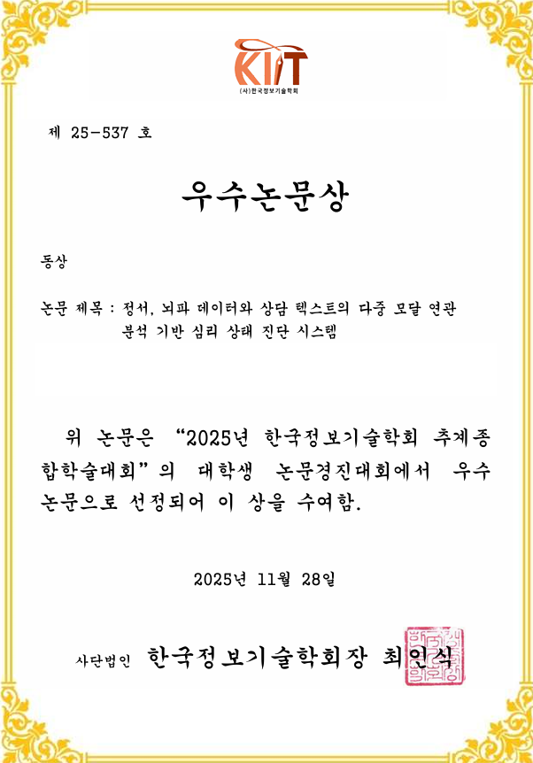

포트폴리오 / 프로젝트
Emori
뇌파와 상담 텍스트를 함께 분석하는 멀티모달 AI, 뇌파 요약 LLM 담당
개요
상담사가 학생 상태를 빠르게 파악하도록, VR 체험 중 뇌파와 상담 텍스트를 함께 분석한 멀티모달 AI 산학협력 프로젝트(협력기관 (주)모티버)입니다. 저는 뇌파 쪽을 맡아, 숫자를 AI 서술 리포트와 시각 자료로 바꿨습니다.

제가 맡은 일
- 뇌파·VR 결과 텍스트를 JSON으로 통합하고, 감정 값의 이름을 원본 기준으로 정리 (대응 기준은 멘토에게 확인)
- 규칙 기반 데이터 증강과 4가지 말투의 정답 문장 작성
- Llama 3.1 8B 경량 추가학습과 서술형 리포트 생성
- 뇌파 지표 시각화 (단계별 색상 표, 막대·방사형 차트, 키워드 태그)
팀원 담당·팀 공통
상담 인터뷰 텍스트의 감정 키워드 추출, 키워드와 감정의 연관 분석, 통합 화면은 팀원이 맡았습니다.
풀려던 문제
협력 기업의 프로그램은 학생의 감정과 뇌파 데이터를 제공했지만, 상담에 바로 쓰기에는 두 가지가 불편했습니다.
뇌파 결과를 바로 이해하기 어려움
수치 중심의 결과를 상담사가 다시 해석해야 함내 담당AI가 서술형 문장으로 요약하고, 색상 표·차트로 시각화
상담 내용을 다시 분석해야 함
상담 녹음이 글로 저장될 뿐이라, 상담사가 읽으며 다시 살펴야 함팀원 담당텍스트에서 감정 키워드를 뽑아 시각화
뇌파(몸의 반응)와 상담 텍스트(말)를 한 화면에서 함께 확인 — 말로는 괜찮다고 해도 몸은 긴장한 경우처럼, 서로 어긋나는 지점을 살필 수 있도록 구성
동작 흐름
VR 체험은 3단계로 진행되고, 뇌파 6지표(스트레스·몰입·이완·흥분·흥미·집중)가 기록됩니다. 이 숫자를 상담사가 바로 읽을 수 있는 문장으로 바꾸는 과정입니다.
- 뇌파·VR 기록체험 결과 텍스트 파일
- JSON으로 정리단계별 뇌파 값과 감정 값의 이름 통일
- 증강·정답 작성부족한 기록을 늘리고 정답 문장 작성
- LoRA 추가학습Llama 3.1 8B의 일부 가중치만 학습
- 서술형 리포트체험의 시작·중간·마지막을 문장으로 설명
사례
AI 서술 요약: 규칙 문장·범용 LLM 대신 추가학습
정해진 형식의 3단계 서술 리포트
수치를 상담사가 읽을 수 있는 말로 바꾸기 위해, 협력 기업과 정해진 형식에 가까운 서술형 문장으로 결과를 설명하기로 했고, 만드는 방법을 검토했습니다.
| 방법 | 검토 결과 |
|---|---|
| 규칙으로 문장 조립 | 문장이 반복되고 지표를 하나씩만 해석해 제외 |
| 범용 LLM 그대로 사용 | 뇌파 분야 표현이 부족하고 일반적인 말에 그쳐 제외 |
| 추가학습 | 원하는 형식과 표현을 정답 문장으로 가르칠 수 있어 선택 |
- 학습 환경
- 모델을 4비트로 줄여 올리고 일부 가중치만 학습하는 LoRA를 적용해, 개인 PC의 GPU(RTX 4070 Ti)에서 학습
- 형식 개선
- 처음의 한 문단 요약을 시작·중간·마지막 3단계로 나누고, 단계마다 시작 표현을 고정해 한 문장씩 생성
결론3단계를 한 문장씩 설명하는 리포트 모델 구성
정량 평가는 하지 않았고, 생성 문장을 직접 읽어 확인했습니다.
부족한 학습 데이터를 규칙 증강과 여러 정답으로 확장
입력 70개 → 학습에 쓴 데이터 210개
학생 데이터라 학습에 쓸 기록이 적었습니다. 입력은 가상 기록으로, 정답은 한 입력에 여러 문장으로 늘렸습니다.
- 70개실제 기록 45개 + 증강 25개
- 280개입력마다 4가지 말투
- 210개단순 나열 말투 제외
- 168 · 42개학습 80% · 검증 20%
- 무작위 문제
- 값을 따로따로 뽑으면 스트레스와 이완이 함께 높은 것처럼 어색한 조합이 생김
- 증강 규칙
- 실제 기록 1개를 바탕으로 처음 9개는 원본 값의 ±20% 범위에서 만들고, 이후에는 이완이 높으면 스트레스는 낮게 맞춤
- 사용 범위
- 증강 기록 50개를 만들었고, 정답 문장을 작성한 25개를 학습에 사용
결론관련 있는 지표끼리 맞추는 규칙으로 증강
210개는 같은 입력에 정답을 여러 개 단 결과이며, 서로 다른 입력은 70개입니다.
정답 문장을 4가지 말투로 쓰고, 하나는 제외
같은 입력에 관점이 다른 정답 작성
정답이 한 가지 말투면 리포트가 단조로워집니다. 예를 들어 감정이 '역겨움'이고 집중 0.86 · 흥미 0.92 · 이완 0.06 · 스트레스 0.07인 입력에는 이렇게 작성했습니다.
| 말투 | 정답 문장의 첫 단계 일부 | 학습 |
|---|---|---|
| 상반 지표 강조 | 집중과 흥미는 매우 높은 수준인데 이완과 스트레스는 매우 낮게 유지되는 등 상반된 지표가 동시에 드러나는 것으로 해석됩니다. | 사용 |
| 긍정 결과 강조 | 스트레스가 매우 낮고 집중과 흥미가 매우 높은 수준으로 유지되어 전반적으로 안정적인 기반이 확인됩니다. | 사용 |
| 흐름·전문 어휘 | 흥미와 집중은 매우 높은 수준으로 상승하는 반면 이완은 매우 낮은 상태로 제한되는 초기 흐름이 나타납니다. | 사용 |
| 단순 나열 | 스트레스는 매우 낮음, 이완은 매우 낮음, 집중과 흥미는 매우 높음으로 정리됩니다. | 제외 |
결론단순 나열을 빼고 3가지 말투로 학습
결과를 읽어 보니 지나치게 형식적이었습니다. 수치 비교가 아닌 직접 판단입니다.
18개의 뇌파 숫자를 색으로 한눈에
지표 6개 × 3단계의 변화를 색 진하기로 표현
단계마다 지표가 6개라 숫자만으로는 무엇이 달라졌는지 찾기 어렵습니다. 지표마다 색을 정하고, 세 단계 중 상대적으로 큰 값일수록 진하게 표시했습니다.
| 스트레스 | 참여 | 이완 | 자극 | 관심 | 집중 | |
|---|---|---|---|---|---|---|
| 1단계 | 0.07 | 0.53 | 0.06 | 0.67 | 0.92 | 0.86 |
| 2단계 | 0.06 | 0.48 | 0.06 | 0.71 | 0.87 | 0.87 |
| 3단계 | 0.09 | 0.71 | 0.82 | 0.75 | 0.43 | 0.96 |
- 요약 차트
- 6개 지표를 인지 부하·종합 몰입도 등 5개 해석 지표로 묶어 막대·방사형 차트로 표현 (계산식은 직접 정한 값)
- 키워드 태그
- 감정과 몰입·집중 정도를 짧은 태그로 바꿔 리포트에서 바로 훑을 수 있게 구성
결론색상 표와 차트를 팀의 통합 화면에 연결
예시에서는 3단계에서 이완이 크게 오르고 관심이 내려간 것이 색만으로 보입니다.
한계
| 생성 문장 | 입력 수치와 다른 표현이 섞일 수 있음저장된 생성 예시에는 변화가 없던 값을 '상승'으로 설명한 표현이 있습니다. |
|---|---|
| 모델 입력 | 중간 단계의 뇌파 값은 입력에 없음마지막 값과 처음 대비 변화량만 넣어, 중간 단계 설명은 입력만으로 확인할 수 없습니다. |
| 검증 | 검증 손실은 독립된 검증이 아님같은 입력의 다른 말투 정답이 학습과 검증에 나뉘어 들어갑니다. |
| 데이터 | 증강 기록이 실제와 비슷한지는 미확인증강 기록은 모두 실제 기록 1개에서 만들었습니다. |